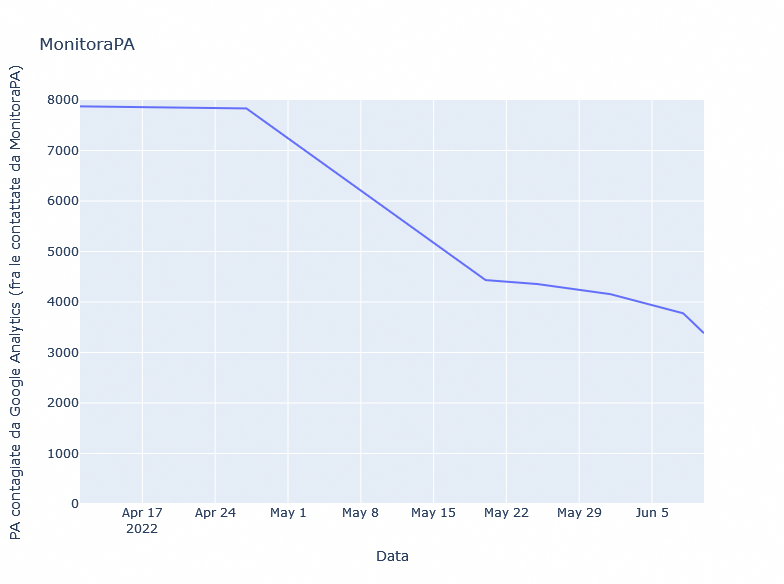

Ma grazie a voi!
I feedback che abbiamo ricevuto in questa settimana sono molto incoraggianti.
A seguito della Sua prima comunicazione, abbiamo avviato un audit sulla compliance del sito web in oggetto, interessando il fornitore che si occupa della relativa gestione. Sulla base delle informazioni raccolte, abbiamo elaborato e sottoposto al fornitore delle azioni su cui attendiamo riscontro a breve e di cui Vi terremo aggiornati.
Ringraziamo per la segnalazione, oltre che per l’opera che svolgete.
Cordiali saluti,
Il DPO
Buon pomeriggio,
innanzitutto grazie per averci segnalato il problema.
In realtà credevamo di averlo cancellato eliminando la pagina relativa al problema,
ma in virtù di questa seconda segnalazione ci siamo accorti che il plugin relativo
era impostato nel tema del sito stesso.
Nella speranza di aver provveduto a risolvere il tutto inviamo cordiali saluti
Ringraziandovi per la segnalazione, Vi informiamo di avere già provveduto alla rimozione di Google Analytics (GA) dal sito e di averlo sostituito con lo strumento messo a disposizione per le Pubbliche Amministrazioni dall'Agenzia per l'Italia Digitale, "Web Analytics".
Gent.mo,
nel ringraziare per la segnalazione, si comunica di aver provveduto alla
eliminazione di Google Analytics.
Spett.le Fabio Pietrosanti – MonitoraPA,
nel ringraziarla per la segnalazione del 06/06/2022 nel rispetto delle disposizioni
del GDPR in ordine al trasferimento transfrontaliero dei dati personali e alle "Linee guida cookie e altri
strumenti di tracciamento" approvate dall'Autorità garante per la protezione dei dati personali il 10 giugno
2021 abbiamo provveduto alla rimozione di Google Analytics e di qualsiasi altro strumento di analisi o
tracciamento che produca effetti analoghi dal sito web istituzionale.
In riferimento alla VS segnalazione di violazione del Regolamento protezione dati sul ns sito, si comunica di aver provveduto alla rimozione di Google Analitycs, e a ogni tipo di strumento che viola il diritto alla riservatezza.
Si coglie l'occasione per ringraziare per le segnalazioni fatte, utili ad un attento rispetto della normativa vigente, con particolare riferimento alla materia della protezione dei dati personali.
Buongiorno sig. Pietrosanti,
comunichiamo di aver provveduto a disattivare tutti i collegamenti a Google Analytics;
Ringraziamo Lei ed i suoi collaboratori per la segnalazione.
Gentilissimo,
dando riscontro alla nota del
06/06/2022, si comunica l'avvenuta disattivazione del monitoraggio delle statistiche con
Google Analytics nel sito istituzionale dell'Ente nelle
more delle pronunzie dell'AgID e del Garante Italiano per la protezione dei dati
personali.
Buongiorno,
si risponde alla precedente comunicazione poiché l'Ente ha a cuore la privacy ed i diritti digitali e non dei cittadini, nonché le disposizioni GDPR.
Sul nostro sito è ora attivo WAI, ed è stato dismesso Google Analytics.
Questa breve antologia mostra, più di tanti numeri, il tenore della maggioranza delle risposte che stiamo ricevendo. A tutti vogliamo dire: ma grazie a voi! :-D
Qualche dato
In una settimana, più di 700 nuove PA hanno rimosso Google Analytics.
Una decina ci ha risposto che stanno per rimuoverlo (e noi speriamo vivamente riescano a rimuoverlo entro il 20 giugno, evitando la segnalazione al Garante).
19 ci hanno però sorpreso comunicandoci di aver già rimosso Google Analytics a fronte della nostra prima PEC. Temendo un errore dell'osservatorio abbiamo verificato manualmente tutti e 19 i siti in questione trovando ancora Google Analytics abilitato.
Paradossalmente, diverse di queste PA avevano allegato alla risposta screenshot della dashboard di Google comprovanti la disattivazione del servizio.
Ma GA c'é o non c'é?
Semplicemente queste PA avevano disdetto il contratto con Google, ma non avevano rimosso i tracciatori dal sito. In questo modo, continuavano ad inviare a Google i dati personali dei visitatori... senza poter nemmeno accedere alle statistiche!
Per questo, a tutte e 19 abbiamo risposto con indicazioni precise su come verificare la presenza di Google Analytics sul proprio sito, nella speranza di non doverli segnalare comunque al Garante della Privacy al termine dei 15 giorni previsti.
ATTENZIONE! Se ritenete di aver già rimosso in precedenza Google Analytics ma avete ricevuto la nostra PEC, vi invitiamo a verificare la presenza dei suoi tracciatori sul sito web. Uno strumento indipendente che effettua un controllo molto simile (ma non identico) al nostro è Webbkoll.
E naturalmente potete venirci a trovare sulla nostra chat
Matrix / Telegram.
Per quanto possibile, saremo felici di aiutarvi!
Ulteriori ringraziamenti
Ci teniamo a ringraziare Walter Vannini che, commentando su Twitter le recenti FAQ del CNIL francese, ha ispirato la scrittura di questo breve aggiornamento.
Inoltre dobbiamo ringraziare il Garante Francese che con queste nuove FAQ su Google Analytics chiarisce che i Titolari del trattamento non possono adottare un approccio "risk-based" rispetto ai trasferimenti verso Google Analytics.
Come abbiamo sempre sostenuto anche noi, in assenza di efficaci misure tecniche supplementari adottate dal Titolare del Trattamento, il trasferimento di dati verso Google è illegittimo e costituisce una grave compromissione della confidenzialità delle comunicazioni fra cittadini e Pubbliche Amministrazioni.